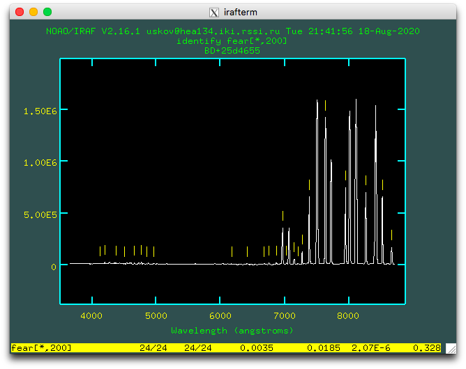

<!DOCTYPE html>
<html xmlns="http://www.w3.org/1999/xhtml" lang="en" xml:lang="en"><head>

<meta charset="utf-8">
<meta name="generator" content="quarto-0.9.531">

<meta name="viewport" content="width=device-width, initial-scale=1.0, user-scalable=yes">

<meta name="dcterms.date" content="2020-08-18">

<title>uskovgs.github.io - Обработка оптических спектров на примере РТТ-150/TFOSC на сервере</title>
<style>
code{white-space: pre-wrap;}
span.smallcaps{font-variant: small-caps;}
span.underline{text-decoration: underline;}
div.column{display: inline-block; vertical-align: top; width: 50%;}
div.hanging-indent{margin-left: 1.5em; text-indent: -1.5em;}
ul.task-list{list-style: none;}
pre > code.sourceCode { white-space: pre; position: relative; }
pre > code.sourceCode > span { display: inline-block; line-height: 1.25; }
pre > code.sourceCode > span:empty { height: 1.2em; }
.sourceCode { overflow: visible; }
code.sourceCode > span { color: inherit; text-decoration: inherit; }
div.sourceCode { margin: 1em 0; }
pre.sourceCode { margin: 0; }
@media screen {
div.sourceCode { overflow: auto; }
}
@media print {
pre > code.sourceCode { white-space: pre-wrap; }
pre > code.sourceCode > span { text-indent: -5em; padding-left: 5em; }
}
pre.numberSource code
  { counter-reset: source-line 0; }
pre.numberSource code > span
  { position: relative; left: -4em; counter-increment: source-line; }
pre.numberSource code > span > a:first-child::before
  { content: counter(source-line);
    position: relative; left: -1em; text-align: right; vertical-align: baseline;
    border: none; display: inline-block;
    -webkit-touch-callout: none; -webkit-user-select: none;
    -khtml-user-select: none; -moz-user-select: none;
    -ms-user-select: none; user-select: none;
    padding: 0 4px; width: 4em;
    color: #aaaaaa;
  }
pre.numberSource { margin-left: 3em; border-left: 1px solid #aaaaaa;  padding-left: 4px; }
div.sourceCode
  {   }
@media screen {
pre > code.sourceCode > span > a:first-child::before { text-decoration: underline; }
}
code span.al { color: #ff0000; font-weight: bold; } /* Alert */
code span.an { color: #60a0b0; font-weight: bold; font-style: italic; } /* Annotation */
code span.at { color: #7d9029; } /* Attribute */
code span.bn { color: #40a070; } /* BaseN */
code span.bu { } /* BuiltIn */
code span.cf { color: #007020; font-weight: bold; } /* ControlFlow */
code span.ch { color: #4070a0; } /* Char */
code span.cn { color: #880000; } /* Constant */
code span.co { color: #60a0b0; font-style: italic; } /* Comment */
code span.cv { color: #60a0b0; font-weight: bold; font-style: italic; } /* CommentVar */
code span.do { color: #ba2121; font-style: italic; } /* Documentation */
code span.dt { color: #902000; } /* DataType */
code span.dv { color: #40a070; } /* DecVal */
code span.er { color: #ff0000; font-weight: bold; } /* Error */
code span.ex { } /* Extension */
code span.fl { color: #40a070; } /* Float */
code span.fu { color: #06287e; } /* Function */
code span.im { } /* Import */
code span.in { color: #60a0b0; font-weight: bold; font-style: italic; } /* Information */
code span.kw { color: #007020; font-weight: bold; } /* Keyword */
code span.op { color: #666666; } /* Operator */
code span.ot { color: #007020; } /* Other */
code span.pp { color: #bc7a00; } /* Preprocessor */
code span.sc { color: #4070a0; } /* SpecialChar */
code span.ss { color: #bb6688; } /* SpecialString */
code span.st { color: #4070a0; } /* String */
code span.va { color: #19177c; } /* Variable */
code span.vs { color: #4070a0; } /* VerbatimString */
code span.wa { color: #60a0b0; font-weight: bold; font-style: italic; } /* Warning */
</style>


<script src="../../site_libs/quarto-nav/quarto-nav.js"></script>
<script src="../../site_libs/quarto-nav/headroom.min.js"></script>
<script src="../../site_libs/clipboard/clipboard.min.js"></script>
<script src="../../site_libs/quarto-search/autocomplete.umd.js"></script>
<script src="../../site_libs/quarto-search/fuse.min.js"></script>
<script src="../../site_libs/quarto-search/quarto-search.js"></script>
<meta name="quarto:offset" content="../../">
<script src="../../site_libs/quarto-html/quarto.js"></script>
<script src="../../site_libs/quarto-html/popper.min.js"></script>
<script src="../../site_libs/quarto-html/tippy.umd.min.js"></script>
<script src="../../site_libs/quarto-html/anchor.min.js"></script>
<link href="../../site_libs/quarto-html/tippy.css" rel="stylesheet">
<link href="../../site_libs/quarto-html/quarto-syntax-highlighting.css" rel="stylesheet" id="quarto-text-highlighting-styles">
<script src="../../site_libs/bootstrap/bootstrap.min.js"></script>
<link href="../../site_libs/bootstrap/bootstrap-icons.css" rel="stylesheet">
<link href="../../site_libs/bootstrap/bootstrap.min.css" rel="stylesheet">
<script id="quarto-search-options" type="application/json">{
  "location": "navbar",
  "copy-button": false,
  "collapse-after": 3,
  "panel-placement": "end",
  "type": "overlay",
  "limit": 20,
  "language": {
    "search-no-results-text": "No results",
    "search-matching-documents-text": "matching documents",
    "search-copy-link-title": "Copy link to search",
    "search-hide-matches-text": "Hide additional matches",
    "search-more-match-text": "more match in this document",
    "search-more-matches-text": "more matches in this document",
    "search-clear-button-title": "Clear",
    "search-detached-cancel-button-title": "Cancel",
    "search-submit-button-title": "Submit"
  }
}</script>


<link rel="stylesheet" href="../../styles.css">
</head>

<body class="nav-fixed">

<div id="quarto-search-results"></div>
  <header id="quarto-header" class="headroom fixed-top">
    <nav class="navbar navbar-expand-lg navbar-dark ">
      <div class="navbar-container container-fluid">
      <a class="navbar-brand" href="../../index.html">
    <span class="navbar-title">uskovgs.github.io</span>
  </a>
          <button class="navbar-toggler" type="button" data-bs-toggle="collapse" data-bs-target="#navbarCollapse" aria-controls="navbarCollapse" aria-expanded="false" aria-label="Toggle navigation" onclick="if (window.quartoToggleHeadroom) { window.quartoToggleHeadroom(); }">
  <span class="navbar-toggler-icon"></span>
</button>
          <div class="collapse navbar-collapse" id="navbarCollapse">
            <ul class="navbar-nav navbar-nav-scroll ms-auto">
  <li class="nav-item">
    <a class="nav-link" href="../../about.html">About</a>
  </li>  
  <li class="nav-item compact">
    <a class="nav-link" href="https://github.com/uskovgs"><i class="bi bi-github" role="img">
</i> 
 </a>
  </li>  
</ul>
              <div id="quarto-search" class="" title="Search"></div>
          </div> <!-- /navcollapse -->
      </div> <!-- /container-fluid -->
    </nav>
</header>
<!-- content -->
<header id="title-block-header" class="quarto-title-block default page-columns page-full">
  <div class="quarto-title-banner page-columns page-full">
    <div class="quarto-title column-body">
      <h1 class="title">Обработка оптических спектров на примере РТТ-150/TFOSC на сервере</h1>
                                <div class="quarto-categories">
                <div class="quarto-category">iraf</div>
                <div class="quarto-category">unix</div>
              </div>
                  </div>
  </div>
    
  
  <div class="quarto-title-meta">

      
      <div>
      <div class="quarto-title-meta-heading"></div>
      <div class="quarto-title-meta-contents">
        <p class="date">August 18, 2020</p>
      </div>
    </div>
      
    </div>
    
  
  </header><div id="quarto-content" class="quarto-container page-columns page-rows-contents page-layout-article page-navbar">
<!-- sidebar -->
<!-- margin-sidebar -->
    <div id="quarto-margin-sidebar" class="sidebar margin-sidebar">
        <nav id="TOC" role="doc-toc">
    <h2 id="toc-title">On this page</h2>
   
  <ul>
  <li><a href="#усредненный-bias" id="toc-усредненный-bias" class="nav-link active" data-scroll-target="#усредненный-bias">Усредненный bias</a></li>
  <li><a href="#усреднение-halogen" id="toc-усреднение-halogen" class="nav-link" data-scroll-target="#усреднение-halogen">Усреднение Halogen</a></li>
  <li><a href="#усреднение-fear" id="toc-усреднение-fear" class="nav-link" data-scroll-target="#усреднение-fear">Усреднение FeAr</a></li>
  <li><a href="#создание-функции-отклика" id="toc-создание-функции-отклика" class="nav-link" data-scroll-target="#создание-функции-отклика">Создание функции отклика</a></li>
  <li><a href="#деление-спектра-звезд-на-плоское-поле" id="toc-деление-спектра-звезд-на-плоское-поле" class="nav-link" data-scroll-target="#деление-спектра-звезд-на-плоское-поле">Деление спектра звезд на плоское поле</a></li>
  <li><a href="#построение-дисперсионной-кривой" id="toc-построение-дисперсионной-кривой" class="nav-link" data-scroll-target="#построение-дисперсионной-кривой">Построение дисперсионной кривой</a></li>
  <li><a href="#привязка-спектра-звезды-по-длинам-волн" id="toc-привязка-спектра-звезды-по-длинам-волн" class="nav-link" data-scroll-target="#привязка-спектра-звезды-по-длинам-волн">Привязка спектра звезды по длинам волн</a></li>
  <li><a href="#очистка-от-космиков" id="toc-очистка-от-космиков" class="nav-link" data-scroll-target="#очистка-от-космиков">Очистка от космиков</a></li>
  <li><a href="#совмещение-спектров-звезды-для-дальнейшего-суммирования" id="toc-совмещение-спектров-звезды-для-дальнейшего-суммирования" class="nav-link" data-scroll-target="#совмещение-спектров-звезды-для-дальнейшего-суммирования">Совмещение спектров звезды для дальнейшего суммирования</a></li>
  <li><a href="#комбинирование-совмещенных-спектров" id="toc-комбинирование-совмещенных-спектров" class="nav-link" data-scroll-target="#комбинирование-совмещенных-спектров">Комбинирование совмещенных спектров</a></li>
  <li><a href="#экстракция-спектра" id="toc-экстракция-спектра" class="nav-link" data-scroll-target="#экстракция-спектра">Экстракция спектра</a></li>
  <li><a href="#перевод-отсчетов-в-абсолютные-потоки" id="toc-перевод-отсчетов-в-абсолютные-потоки" class="nav-link" data-scroll-target="#перевод-отсчетов-в-абсолютные-потоки">Перевод отсчетов в абсолютные потоки</a></li>
  </ul>
</nav>
    </div>
<!-- main -->
<main class="content quarto-banner-title-block" id="quarto-document-content">


<p>Создание краткой сводки по всем файлам</p>
<div class="sourceCode" id="cb1"><pre class="sourceCode bash code-with-copy"><code class="sourceCode bash"><span id="cb1-1"><a href="#cb1-1" aria-hidden="true" tabindex="-1"></a><span class="ex">makelog</span></span></code><button title="Copy to Clipboard" class="code-copy-button"><i class="bi"></i></button></pre></div>
<p>Создадим папку с названием нашей звезды стандарта и скопируем туда спектры данной звезды и файлы ламп <strong>FeAr</strong> и <strong>Halogen</strong></p>
<div class="sourceCode" id="cb2"><pre class="sourceCode bash code-with-copy"><code class="sourceCode bash"><span id="cb2-1"><a href="#cb2-1" aria-hidden="true" tabindex="-1"></a><span class="fu">mkdir</span> BD+25d4655</span>
<span id="cb2-2"><a href="#cb2-2" aria-hidden="true" tabindex="-1"></a><span class="fu">cp</span> <span class="kw">`</span><span class="fu">cat</span> .log <span class="kw">|</span> <span class="fu">grep</span> 20200721 <span class="kw">|</span> <span class="fu">grep</span> <span class="st">'1024 200'</span> <span class="kw">|</span> <span class="fu">grep</span> BD+25d4655 <span class="kw">|</span> <span class="fu">awk</span> <span class="st">'{print$3}'</span><span class="kw">`</span> BD+25d4655/</span></code><button title="Copy to Clipboard" class="code-copy-button"><i class="bi"></i></button></pre></div>
<section id="усредненный-bias" class="level3">
<h3 class="anchored" data-anchor-id="усредненный-bias">Усредненный bias</h3>
<p>Создадим папку со спектральными <strong>bias</strong> и скопируем их туда</p>
<div class="sourceCode" id="cb3"><pre class="sourceCode bash code-with-copy"><code class="sourceCode bash"><span id="cb3-1"><a href="#cb3-1" aria-hidden="true" tabindex="-1"></a><span class="fu">mkdir</span> biassp</span>
<span id="cb3-2"><a href="#cb3-2" aria-hidden="true" tabindex="-1"></a><span class="fu">cp</span> <span class="kw">`</span><span class="fu">cat</span> .log <span class="kw">|</span> <span class="fu">grep</span> <span class="st">'1024 200'</span> <span class="kw">|</span> <span class="fu">grep</span> bias <span class="kw">|</span> <span class="fu">grep</span> 0.0000 <span class="kw">|</span> <span class="fu">grep</span> <span class="at">-v</span> flat <span class="kw">|</span> <span class="fu">awk</span> <span class="st">'{print$3}'</span><span class="kw">`</span> biassp/</span></code><button title="Copy to Clipboard" class="code-copy-button"><i class="bi"></i></button></pre></div>
<p>Проверим <strong>bias</strong> перед усреднением.</p>
<div class="sourceCode" id="cb4"><pre class="sourceCode bash code-with-copy"><code class="sourceCode bash"><span id="cb4-1"><a href="#cb4-1" aria-hidden="true" tabindex="-1"></a><span class="bu">cd</span> biassp/</span>
<span id="cb4-2"><a href="#cb4-2" aria-hidden="true" tabindex="-1"></a><span class="fu">ls</span> <span class="pp">*</span>.fit <span class="op">&gt;</span> biassp.list</span>
<span id="cb4-3"><a href="#cb4-3" aria-hidden="true" tabindex="-1"></a><span class="ex">gedit</span> biassp.list <span class="kw">&amp;</span> <span class="co"># для удаления "плохих" bias из списка</span></span>
<span id="cb4-4"><a href="#cb4-4" aria-hidden="true" tabindex="-1"></a><span class="ex">ds9</span> <span class="kw">&amp;</span></span>
<span id="cb4-5"><a href="#cb4-5" aria-hidden="true" tabindex="-1"></a><span class="ex">xs</span> <span class="kw">`</span><span class="fu">cat</span> biassp.list<span class="kw">`</span></span></code><button title="Copy to Clipboard" class="code-copy-button"><i class="bi"></i></button></pre></div>
<p>Перед тем как делать усреднение нужно исправить ключи в FITS Header к bias, так как у нас не записан правильный <strong>GAIN</strong>. Для этого выполним команду</p>
<div class="sourceCode" id="cb5"><pre class="sourceCode bash code-with-copy"><code class="sourceCode bash"><span id="cb5-1"><a href="#cb5-1" aria-hidden="true" tabindex="-1"></a><span class="ex">../bin/repair_tfosc_andor_keys</span> <span class="pp">*</span>.fit</span></code><button title="Copy to Clipboard" class="code-copy-button"><i class="bi"></i></button></pre></div>
<p>Усредним файлы <strong>bias</strong> по медиане. Для этого небходимо в <strong>IRAF</strong> открыть noao.imred.ccdred</p>
<div class="sourceCode" id="cb6"><pre class="sourceCode bash code-with-copy"><code class="sourceCode bash"><span id="cb6-1"><a href="#cb6-1" aria-hidden="true" tabindex="-1"></a><span class="ex">epar</span> zerocombine</span>
<span id="cb6-2"><a href="#cb6-2" aria-hidden="true" tabindex="-1"></a><span class="va">input</span><span class="op">=</span>@biassp.list</span>
<span id="cb6-3"><a href="#cb6-3" aria-hidden="true" tabindex="-1"></a><span class="va">output</span><span class="op">=</span>Biassp2.fits</span>
<span id="cb6-4"><a href="#cb6-4" aria-hidden="true" tabindex="-1"></a><span class="va">combine</span><span class="op">=</span>median</span></code><button title="Copy to Clipboard" class="code-copy-button"><i class="bi"></i></button></pre></div>
<p>Ввести команду<code>:go</code></p>
<p>Скопируем <strong>Biassp2.fits</strong> в папку <strong>../Caldata</strong></p>
<div class="sourceCode" id="cb7"><pre class="sourceCode bash code-with-copy"><code class="sourceCode bash"><span id="cb7-1"><a href="#cb7-1" aria-hidden="true" tabindex="-1"></a><span class="fu">cp</span> Biassp2.fits ../Caldata/</span></code><button title="Copy to Clipboard" class="code-copy-button"><i class="bi"></i></button></pre></div>
<p>Перейдем в папку <strong>BD+25d4655</strong> и исправвим ключи</p>
<div class="sourceCode" id="cb8"><pre class="sourceCode bash code-with-copy"><code class="sourceCode bash"><span id="cb8-1"><a href="#cb8-1" aria-hidden="true" tabindex="-1"></a><span class="ex">../bin/repair_tfosc_andor_keys</span> <span class="pp">*</span>.fit</span></code><button title="Copy to Clipboard" class="code-copy-button"><i class="bi"></i></button></pre></div>
<p>Создадим списки:</p>
<pre><code>* спектров звезды spec.list 
* спектров лампы **FeAr** fear.list
* спектров лампы **Halogen** halogen.list</code></pre>
<div class="sourceCode" id="cb10"><pre class="sourceCode bash code-with-copy"><code class="sourceCode bash"><span id="cb10-1"><a href="#cb10-1" aria-hidden="true" tabindex="-1"></a><span class="fu">cat</span> .log <span class="kw">|</span> <span class="fu">grep</span> 100.0 <span class="kw">|</span> <span class="fu">awk</span> <span class="st">'{print$3}'</span> <span class="op">&gt;</span> spec.list</span>
<span id="cb10-2"><a href="#cb10-2" aria-hidden="true" tabindex="-1"></a><span class="fu">cat</span> .log <span class="kw">|</span> <span class="fu">grep</span> Fe-Ar <span class="kw">|</span> <span class="fu">awk</span> <span class="st">'{print$3}'</span> <span class="op">&gt;</span> fear.list</span>
<span id="cb10-3"><a href="#cb10-3" aria-hidden="true" tabindex="-1"></a><span class="fu">cat</span> .log <span class="kw">|</span> <span class="fu">grep</span> Halogen <span class="kw">|</span> <span class="fu">awk</span> <span class="st">'{print$3}'</span> <span class="op">&gt;</span> halogen.list</span></code><button title="Copy to Clipboard" class="code-copy-button"><i class="bi"></i></button></pre></div>
<p>Вычтем из всх спектров усредненный <strong>bias</strong></p>
<div class="sourceCode" id="cb11"><pre class="sourceCode bash code-with-copy"><code class="sourceCode bash"><span id="cb11-1"><a href="#cb11-1" aria-hidden="true" tabindex="-1"></a><span class="ex">../bin/process</span> <span class="pp">*</span>.fit <span class="kw">|</span> <span class="ex">si</span></span></code><button title="Copy to Clipboard" class="code-copy-button"><i class="bi"></i></button></pre></div>
</section>
<section id="усреднение-halogen" class="level3">
<h3 class="anchored" data-anchor-id="усреднение-halogen">Усреднение Halogen</h3>
<p>В IRAF открываем noao.imred.ccdred</p>
<div class="sourceCode" id="cb12"><pre class="sourceCode bash code-with-copy"><code class="sourceCode bash"><span id="cb12-1"><a href="#cb12-1" aria-hidden="true" tabindex="-1"></a><span class="ex">epar</span> combine</span>
<span id="cb12-2"><a href="#cb12-2" aria-hidden="true" tabindex="-1"></a><span class="va">input</span><span class="op">=</span>@halogen.list</span>
<span id="cb12-3"><a href="#cb12-3" aria-hidden="true" tabindex="-1"></a><span class="va">output</span><span class="op">=</span>halogen</span>
<span id="cb12-4"><a href="#cb12-4" aria-hidden="true" tabindex="-1"></a><span class="va">combine</span><span class="op">=</span>average</span></code><button title="Copy to Clipboard" class="code-copy-button"><i class="bi"></i></button></pre></div>
<p>Запускаем <code>:go</code></p>
</section>
<section id="усреднение-fear" class="level3">
<h3 class="anchored" data-anchor-id="усреднение-fear">Усреднение FeAr</h3>
<p>В IRAF открываем noao.imred.ccdred</p>
<div class="sourceCode" id="cb13"><pre class="sourceCode bash code-with-copy"><code class="sourceCode bash"><span id="cb13-1"><a href="#cb13-1" aria-hidden="true" tabindex="-1"></a><span class="ex">epar</span> combine</span>
<span id="cb13-2"><a href="#cb13-2" aria-hidden="true" tabindex="-1"></a><span class="va">input</span><span class="op">=</span>@fear.list</span>
<span id="cb13-3"><a href="#cb13-3" aria-hidden="true" tabindex="-1"></a><span class="va">output</span><span class="op">=</span>fear</span>
<span id="cb13-4"><a href="#cb13-4" aria-hidden="true" tabindex="-1"></a><span class="va">combine</span><span class="op">=</span>average</span></code><button title="Copy to Clipboard" class="code-copy-button"><i class="bi"></i></button></pre></div>
</section>
<section id="создание-функции-отклика" class="level3">
<h3 class="anchored" data-anchor-id="создание-функции-отклика">Создание функции отклика</h3>
<p>В IRAF twodspec.longslit</p>
<div class="sourceCode" id="cb14"><pre class="sourceCode bash code-with-copy"><code class="sourceCode bash"><span id="cb14-1"><a href="#cb14-1" aria-hidden="true" tabindex="-1"></a><span class="ex">epar</span> response</span>
<span id="cb14-2"><a href="#cb14-2" aria-hidden="true" tabindex="-1"></a><span class="va">calibrat</span><span class="op">=</span>halogen</span>
<span id="cb14-3"><a href="#cb14-3" aria-hidden="true" tabindex="-1"></a><span class="va">normaliz</span><span class="op">=</span>halogen</span>
<span id="cb14-4"><a href="#cb14-4" aria-hidden="true" tabindex="-1"></a><span class="va">response</span><span class="op">=</span>nhalogen</span></code><button title="Copy to Clipboard" class="code-copy-button"><i class="bi"></i></button></pre></div>
<p>Запускаем <code>:go</code></p>
</section>
<section id="деление-спектра-звезд-на-плоское-поле" class="level3">
<h3 class="anchored" data-anchor-id="деление-спектра-звезд-на-плоское-поле">Деление спектра звезд на плоское поле</h3>
<p>В IRAF imred.ccdred</p>
<div class="sourceCode" id="cb15"><pre class="sourceCode bash code-with-copy"><code class="sourceCode bash"><span id="cb15-1"><a href="#cb15-1" aria-hidden="true" tabindex="-1"></a><span class="ex">epar</span> ccdproc</span>
<span id="cb15-2"><a href="#cb15-2" aria-hidden="true" tabindex="-1"></a><span class="va">images</span><span class="op">=</span>@spec.list</span>
<span id="cb15-3"><a href="#cb15-3" aria-hidden="true" tabindex="-1"></a><span class="va">flatcor</span><span class="op">=</span>yes</span>
<span id="cb15-4"><a href="#cb15-4" aria-hidden="true" tabindex="-1"></a><span class="va">flat</span><span class="op">=</span>nhalogen.fits</span></code><button title="Copy to Clipboard" class="code-copy-button"><i class="bi"></i></button></pre></div>
<p>Запускаем <code>:go</code></p>
</section>
<section id="построение-дисперсионной-кривой" class="level3">
<h3 class="anchored" data-anchor-id="построение-дисперсионной-кривой">Построение дисперсионной кривой</h3>
<p>IRAF twodspec.longslit</p>
<div class="sourceCode" id="cb16"><pre class="sourceCode bash code-with-copy"><code class="sourceCode bash"><span id="cb16-1"><a href="#cb16-1" aria-hidden="true" tabindex="-1"></a><span class="ex">epar</span> identify</span>
<span id="cb16-2"><a href="#cb16-2" aria-hidden="true" tabindex="-1"></a><span class="va">images</span><span class="op">=</span>fear.fits</span>
<span id="cb16-3"><a href="#cb16-3" aria-hidden="true" tabindex="-1"></a><span class="va">section</span><span class="op">=</span>middle <span class="ex">line</span></span>
<span id="cb16-4"><a href="#cb16-4" aria-hidden="true" tabindex="-1"></a><span class="va">coordli</span><span class="op">=</span>linelists<span class="va">$idhenear</span>.dat</span>
<span id="cb16-5"><a href="#cb16-5" aria-hidden="true" tabindex="-1"></a><span class="va">cradius</span><span class="op">=</span>8</span></code><button title="Copy to Clipboard" class="code-copy-button"><i class="bi"></i></button></pre></div>
<p></p>
<div class="sourceCode" id="cb17"><pre class="sourceCode bash code-with-copy"><code class="sourceCode bash"><span id="cb17-1"><a href="#cb17-1" aria-hidden="true" tabindex="-1"></a><span class="ex">epar</span> reidentify</span>
<span id="cb17-2"><a href="#cb17-2" aria-hidden="true" tabindex="-1"></a><span class="va">cradius</span><span class="op">=</span>8</span>
<span id="cb17-3"><a href="#cb17-3" aria-hidden="true" tabindex="-1"></a><span class="va">coordli</span><span class="op">=</span>linelists<span class="va">$idhenear</span>.dat</span>
<span id="cb17-4"><a href="#cb17-4" aria-hidden="true" tabindex="-1"></a><span class="va">referenc</span><span class="op">=</span>fear</span>
<span id="cb17-5"><a href="#cb17-5" aria-hidden="true" tabindex="-1"></a><span class="va">images</span><span class="op">=</span>fear</span></code><button title="Copy to Clipboard" class="code-copy-button"><i class="bi"></i></button></pre></div>
<div class="sourceCode" id="cb18"><pre class="sourceCode bash code-with-copy"><code class="sourceCode bash"><span id="cb18-1"><a href="#cb18-1" aria-hidden="true" tabindex="-1"></a><span class="ex">epar</span> fitcoords</span>
<span id="cb18-2"><a href="#cb18-2" aria-hidden="true" tabindex="-1"></a><span class="va">images</span><span class="op">=</span>fear</span></code><button title="Copy to Clipboard" class="code-copy-button"><i class="bi"></i></button></pre></div>
<p>Удаляем плохие точки клавишами <code>d</code> <code>p</code></p>
<p><code>y</code> <code>y</code> <code>r</code></p>
<p><code>y``r``r</code></p>
<p></p>
<p>Всё замечательно вписалось</p>
</section>
<section id="привязка-спектра-звезды-по-длинам-волн" class="level3">
<h3 class="anchored" data-anchor-id="привязка-спектра-звезды-по-длинам-волн">Привязка спектра звезды по длинам волн</h3>
<p>Трансформируем спектры по найденному в fitcoords решении</p>
<div class="sourceCode" id="cb19"><pre class="sourceCode bash code-with-copy"><code class="sourceCode bash"><span id="cb19-1"><a href="#cb19-1" aria-hidden="true" tabindex="-1"></a><span class="ex">epar</span> transform</span>
<span id="cb19-2"><a href="#cb19-2" aria-hidden="true" tabindex="-1"></a><span class="va">input</span><span class="op">=</span>@spec.list</span>
<span id="cb19-3"><a href="#cb19-3" aria-hidden="true" tabindex="-1"></a><span class="va">output</span><span class="op">=</span>tr//@spec.list</span>
<span id="cb19-4"><a href="#cb19-4" aria-hidden="true" tabindex="-1"></a><span class="va">fitnames</span><span class="op">=</span>fear</span></code><button title="Copy to Clipboard" class="code-copy-button"><i class="bi"></i></button></pre></div>
<p>Запускаем <code>:go</code></p>
<blockquote class="blockquote">
<p>В папке database два файла fcfear, idfear, хотя <strong>fitnames</strong>=fear</p>
</blockquote>
</section>
<section id="очистка-от-космиков" class="level3">
<h3 class="anchored" data-anchor-id="очистка-от-космиков">Очистка от космиков</h3>
<div class="sourceCode" id="cb20"><pre class="sourceCode bash code-with-copy"><code class="sourceCode bash"><span id="cb20-1"><a href="#cb20-1" aria-hidden="true" tabindex="-1"></a> <span class="ex">~uskov/runTmp/do_cleancrspec</span> trfosc025<span class="pp">*</span>.fit</span></code><button title="Copy to Clipboard" class="code-copy-button"><i class="bi"></i></button></pre></div>
</section>
<section id="совмещение-спектров-звезды-для-дальнейшего-суммирования" class="level3">
<h3 class="anchored" data-anchor-id="совмещение-спектров-звезды-для-дальнейшего-суммирования">Совмещение спектров звезды для дальнейшего суммирования</h3>
<p>IRAF в пакете iki команда alignspectra</p>
<div class="sourceCode" id="cb21"><pre class="sourceCode bash code-with-copy"><code class="sourceCode bash"><span id="cb21-1"><a href="#cb21-1" aria-hidden="true" tabindex="-1"></a><span class="ex">epar</span> alignspec</span>
<span id="cb21-2"><a href="#cb21-2" aria-hidden="true" tabindex="-1"></a><span class="va">images</span><span class="op">=</span>tr//@spec.list</span>
<span id="cb21-3"><a href="#cb21-3" aria-hidden="true" tabindex="-1"></a><span class="va">refimage</span><span class="op">=</span>trfosc0254.fit</span>
<span id="cb21-4"><a href="#cb21-4" aria-hidden="true" tabindex="-1"></a><span class="va">prefix</span><span class="op">=</span>rg</span>
<span id="cb21-5"><a href="#cb21-5" aria-hidden="true" tabindex="-1"></a><span class="va">imreg</span><span class="op">=</span>[160:670,85:145] <span class="co"># указываем бокс, по которому он будет совмещать спектры для дальнейшего складывания</span></span></code><button title="Copy to Clipboard" class="code-copy-button"><i class="bi"></i></button></pre></div>
</section>
<section id="комбинирование-совмещенных-спектров" class="level3">
<h3 class="anchored" data-anchor-id="комбинирование-совмещенных-спектров">Комбинирование совмещенных спектров</h3>
<p>В IRAF пакет imred.ccdred команда combine</p>
<div class="sourceCode" id="cb22"><pre class="sourceCode bash code-with-copy"><code class="sourceCode bash"><span id="cb22-1"><a href="#cb22-1" aria-hidden="true" tabindex="-1"></a><span class="ex">combine</span> input=rgtr//@spec.list output=bd+25d4655.fits</span></code><button title="Copy to Clipboard" class="code-copy-button"><i class="bi"></i></button></pre></div>
</section>
<section id="экстракция-спектра" class="level3">
<h3 class="anchored" data-anchor-id="экстракция-спектра">Экстракция спектра</h3>
<p>В IRAF пакет twodspec.apextract команда apall</p>
<div class="sourceCode" id="cb23"><pre class="sourceCode bash code-with-copy"><code class="sourceCode bash"><span id="cb23-1"><a href="#cb23-1" aria-hidden="true" tabindex="-1"></a><span class="ex">apall</span> input=bd+25d4655.fits output=bd+25d4655_end.fits</span></code><button title="Copy to Clipboard" class="code-copy-button"><i class="bi"></i></button></pre></div>
<p>Клавиши управления</p>
<ul>
<li><code>m</code> создать новую апертуру и центрировать</li>
<li><code>d</code> удалить апертуру</li>
<li><code>l</code> установить <u>левую</u> границу апертуры</li>
<li><code>u</code> установить <u>правую</u> границу апертуры</li>
<li><code>b</code> перейти в режим выбора фона.
<ul>
<li><code>z</code> удаляет область фона</li>
<li><code>s</code> установить левую границу области, а потом правую</li>
<li><code>q</code> выйти из режима фона</li>
</ul></li>
<li><code>:o 3</code> изменить порядок аппроксимации фона</li>
<li><code>f</code> аппроксимировать фон заново</li>
</ul>
<p>В итоге получим изображение спектра звезды</p>
<p></p>
</section>
<section id="перевод-отсчетов-в-абсолютные-потоки" class="level3">
<h3 class="anchored" data-anchor-id="перевод-отсчетов-в-абсолютные-потоки">Перевод отсчетов в абсолютные потоки</h3>
<p>После этого нужно создать файл стандарта звезды std.fits в пакете noao.onedspec</p>
<div class="sourceCode" id="cb24"><pre class="sourceCode bash code-with-copy"><code class="sourceCode bash"><span id="cb24-1"><a href="#cb24-1" aria-hidden="true" tabindex="-1"></a><span class="ex">epar</span> standard</span>
<span id="cb24-2"><a href="#cb24-2" aria-hidden="true" tabindex="-1"></a><span class="va">input</span><span class="op">=</span>bd+25d4655_end.fits </span>
<span id="cb24-3"><a href="#cb24-3" aria-hidden="true" tabindex="-1"></a><span class="va">output</span><span class="op">=</span>std.fits </span>
<span id="cb24-4"><a href="#cb24-4" aria-hidden="true" tabindex="-1"></a><span class="va">star</span><span class="op">=</span>mbd25d4655</span>
<span id="cb24-5"><a href="#cb24-5" aria-hidden="true" tabindex="-1"></a><span class="va">caldir</span><span class="op">=</span>./</span></code><button title="Copy to Clipboard" class="code-copy-button"><i class="bi"></i></button></pre></div>
<p>Учет DQE и поглощения:</p>
<div class="sourceCode" id="cb25"><pre class="sourceCode bash code-with-copy"><code class="sourceCode bash"><span id="cb25-1"><a href="#cb25-1" aria-hidden="true" tabindex="-1"></a><span class="ex">epar</span> sensfunc </span>
<span id="cb25-2"><a href="#cb25-2" aria-hidden="true" tabindex="-1"></a><span class="va">standard</span><span class="op">=</span>std.fits  </span>
<span id="cb25-3"><a href="#cb25-3" aria-hidden="true" tabindex="-1"></a><span class="va">sensitiv</span><span class="op">=</span>sens</span></code><button title="Copy to Clipboard" class="code-copy-button"><i class="bi"></i></button></pre></div>
<p>Теперь переведем стандартный спектр в абсолютные потоки:</p>
<div class="sourceCode" id="cb26"><pre class="sourceCode bash code-with-copy"><code class="sourceCode bash"><span id="cb26-1"><a href="#cb26-1" aria-hidden="true" tabindex="-1"></a><span class="ex">epar</span> calibrate </span>
<span id="cb26-2"><a href="#cb26-2" aria-hidden="true" tabindex="-1"></a><span class="va">input</span><span class="op">=</span>bd+25d4655_end.fits </span>
<span id="cb26-3"><a href="#cb26-3" aria-hidden="true" tabindex="-1"></a><span class="va">output</span><span class="op">=</span>bd_flux.fits</span>
<span id="cb26-4"><a href="#cb26-4" aria-hidden="true" tabindex="-1"></a><span class="va">sensiti</span><span class="op">=</span>sens.0001.fits</span></code><button title="Copy to Clipboard" class="code-copy-button"><i class="bi"></i></button></pre></div>


</section>

</main> <!-- /main -->
<script id="quarto-html-after-body" type="application/javascript">
window.document.addEventListener("DOMContentLoaded", function (event) {
  const icon = "";
  const anchorJS = new window.AnchorJS();
  anchorJS.options = {
    placement: 'right',
    icon: icon
  };
  anchorJS.add('.anchored');
  const clipboard = new window.ClipboardJS('.code-copy-button', {
    target: function(trigger) {
      return trigger.previousElementSibling;
    }
  });
  clipboard.on('success', function(e) {
    // button target
    const button = e.trigger;
    // don't keep focus
    button.blur();
    // flash "checked"
    button.classList.add('code-copy-button-checked');
    var currentTitle = button.getAttribute("title");
    button.setAttribute("title", "Copied!");
    setTimeout(function() {
      button.setAttribute("title", currentTitle);
      button.classList.remove('code-copy-button-checked');
    }, 1000);
    // clear code selection
    e.clearSelection();
  });
  function tippyHover(el, contentFn) {
    const config = {
      allowHTML: true,
      content: contentFn,
      maxWidth: 500,
      delay: 100,
      arrow: false,
      appendTo: function(el) {
          return el.parentElement;
      },
      interactive: true,
      interactiveBorder: 10,
      theme: 'quarto',
      placement: 'bottom-start'
    };
    window.tippy(el, config); 
  }
  const noterefs = window.document.querySelectorAll('a[role="doc-noteref"]');
  for (var i=0; i<noterefs.length; i++) {
    const ref = noterefs[i];
    tippyHover(ref, function() {
      let href = ref.getAttribute('href');
      try { href = new URL(href).hash; } catch {}
      const id = href.replace(/^#\/?/, "");
      const note = window.document.getElementById(id);
      return note.innerHTML;
    });
  }
  var bibliorefs = window.document.querySelectorAll('a[role="doc-biblioref"]');
  for (var i=0; i<bibliorefs.length; i++) {
    const ref = bibliorefs[i];
    const cites = ref.parentNode.getAttribute('data-cites').split(' ');
    tippyHover(ref, function() {
      var popup = window.document.createElement('div');
      cites.forEach(function(cite) {
        var citeDiv = window.document.createElement('div');
        citeDiv.classList.add('hanging-indent');
        citeDiv.classList.add('csl-entry');
        var biblioDiv = window.document.getElementById('ref-' + cite);
        if (biblioDiv) {
          citeDiv.innerHTML = biblioDiv.innerHTML;
        }
        popup.appendChild(citeDiv);
      });
      return popup.innerHTML;
    });
  }
});
</script>
</div> <!-- /content -->


</body></html>